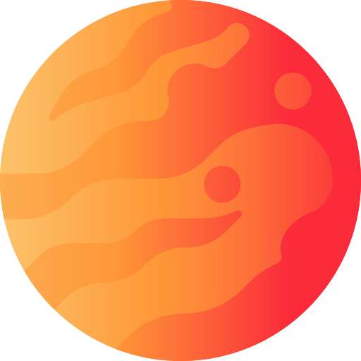
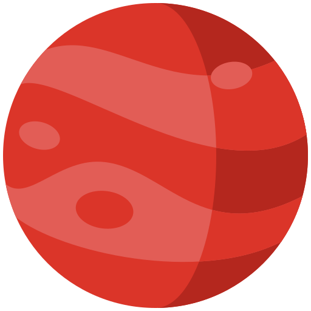
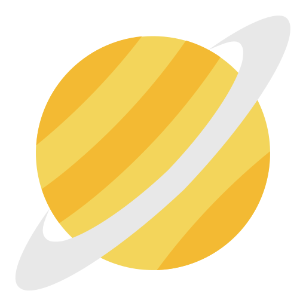
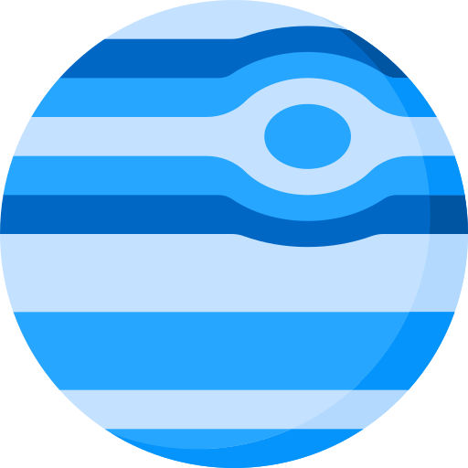
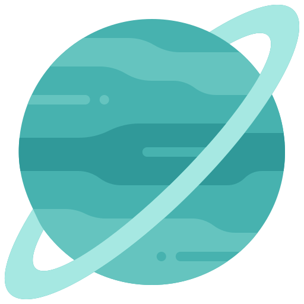
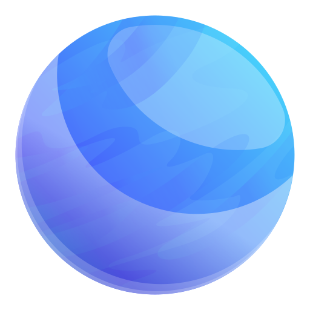

Destinations...

Vénus
Vénus est la deuxième planète du Système solaire et l’un des astres les plus brillants du ciel.
Souvent surnommée la “sœur de la Terre”, elle possède cependant une atmosphère extrêmement dense et brûlante,
rendant sa surface totalement inhabitable. Sa couche de nuages acides lui donne un éclat jaune caractéristique.

Mars
Mars, la célèbre “planète rouge”, est une planète rocheuse plus froide et plus petite que la Terre.
Sa surface est recouverte de poussière riche en oxyde de fer, ce qui lui donne sa couleur rougeâtre.
Elle abrite des montagnes colossales, des canyons immenses et reste l’un des astres les plus étudiés pour la recherche de vie passée.

Jupiter
Jupiter est la plus grande planète du Système solaire, une géante gazeuse dont l’atmosphère tourbillonne en d’immenses tempêtes.
La plus célèbre, la Grande Tache Rouge, est un cyclone gigantesque visible depuis des siècles.
Son système d’anneaux fins et ses nombreuses lunes en font un monde fascinant.

Saturne
Saturne est une géante gazeuse reconnue pour ses spectaculaires anneaux composés de glace et de poussière.
Sa silhouette élégante la rend unique parmi les planètes.
Malgré son apparence calme, son atmosphère est secouée de vents violents et de tempêtes massives.
Pandora
Pandora est une lune luxuriante orbite autour de Polyphémus.
Sa biosphère regorge de forêts bioluminescentes, de montagnes flottantes et d’une faune incroyablement diversifiée.
C’est le monde natal du peuple Na’vi, qui vit en harmonie avec une nature profondément interconnectée.

Polyphémus
Polyphémus est une immense géante gazeuse bleutée située dans le système d’Alpha Centauri.
Elle possède plusieurs lunes, dont Pandora, la plus connue.
Depuis sa surface, son atmosphère turbulente et ses bandes nuageuses créent un spectacle lumineux impressionnant dans le ciel de ses satellites.

Cyberstan
Cyberstan est une planète totalement transformée par la technologie et les machines.
Ses paysages sont dominés par des installations industrielles, des ruines métalliques et des champs de bataille mécaniques.
C’est le cœur du domaine des Automatons, un monde où la machine a surpassé l’organique.

Mon-Cala
Mon-Cala est un monde océanique presque entièrement recouvert d’eau.
Habité par les Mon Calamari et les Quarren, il abrite d’immenses cités sous-marines et une culture avancée tournée vers l’ingénierie navale.
Sa beauté bleutée contraste avec son histoire souvent marquée par les conflits galactiques.

Arkéos
Arkéos est une petite planète rocheuse dont la surface est teintée de rose par des minéraux irisés uniques.
Ses déserts lumineux, ses falaises cristallines et ses légers voiles atmosphériques rosés lui donnent une apparence presque onirique.
Malgré son climat sec, elle abrite une flore rare capable de briller doucement au crépuscule.